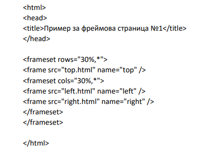

Frames са технология за зареждане на повече от един html ресурс в 1 прозорез на браузъра, чрез разделяне на екрана на frames/рамки
Рамките се използват за разделяне на страницата ни на няколко обособени части. Това ще рече, че може всяка част да е самостоятелна от другите (реклами, банери, допълнения, логота, статични страници) или да са взаимно свързани (меню, главна рамка за отваряне на страницата посочена от менюто, допълнителни линкове за селектиране и други). Всички сме виждали в интернет най-тривиалния пример обикновена страница с меню в ляво. Това означава, че имаме две рамки, основна и такава за менюто. Интересното тук е, че имаме един документ на HTML, който използваме за основен, за да вържем всички рамки. В този документ вместо BODY имаме FRAMESET.
Пример с код:
Нека да разгледаме таговете, които изграждат тази страница:
- Както се вижда, страницата не притежава BODY-секция. На мястото на тага BODY е поставен тага frameset. Тага frameset определя "раграфяването" на индекс-HTML-страницата, а другия таг - frame - "извиква" съответната HTML-страница, която трябва да се появи на съответното място. Тага frameset може да притежава 2 основни атрибута: cols и rows. Чрез атрибута cols се задава разграфяване на страницата на колони, а чрез атрибута rows - на редове. В случая атрибутите cols и rows имат зададени стойности "30%,*". Когато такава стойност е зададена на rows, това означава, че за горния ред (горния хоризонтален фрейм) се запазва 30% от височината на браузъра. Звездичката след запетаята указва, че цялото останало пространство (70%) може да се заеме от долния хоризонтален фрейм. Същата стойност е зададена и на атрибута cols, което означава, че 30% от ширината на прозореца на браузъра са запазени за първата колона (левия вертикален фрейм), а останалото пространство може да се заеме от десния вертикален фрейм. Стойностите на атрибутите cols и rows могат да се зададат и по друг начин. Ако напишем например "30%,70%" - това няма да е грешка. Освен относителни стойности тези атрибути могат да приемат и абсолютни - например ако напишем cols="200,*", това ще означава, че на левия фрейм се отреждат 200 пиксела пространство, а останалото ще бъде заето от десния фрейм.
- Тагът frame изпълнява функцията да "извиква" съответния HTML-документ на нужното място. Това става чрез включването на атрибута src, на който му се задава адреса на нужната HTML-страница. В нашия пример, веднага след frameset rows="30%,*" следва тага frame, който чрез атрибута src извиква HTML-страницата top.html. Внимание! Още веднъж да подчертаем - за да бъде извикана страницата top.html, тя трябва да е предварително създадена. Само така тя ще може да се появи в горния фрейм на нашата фреймова индекс-страница. Същото важи и за останалите две страници - left.html и right.html, които се появяват съответно вляво и вдясно. Тези страници се създават предварително като обикновени HTML-документи - с HEAD и BODY секции. Тага frame няма затварящ таг, но според изискванията на XHTM в края преди затварящата скоба се изписва затваряща наклонена на дясно черта. Последния атрибут от нашия пример - name - в случая не е задължителен за употреба, но е препоръчително да го използвате винаги, защото ако решите, чрез него и с помощта на атрибута target може да зареждате HTML-документ, който да се появи във фрейм, където се е съдържал преди това друг HTML-документ. Как става това е обяснено по-долу.